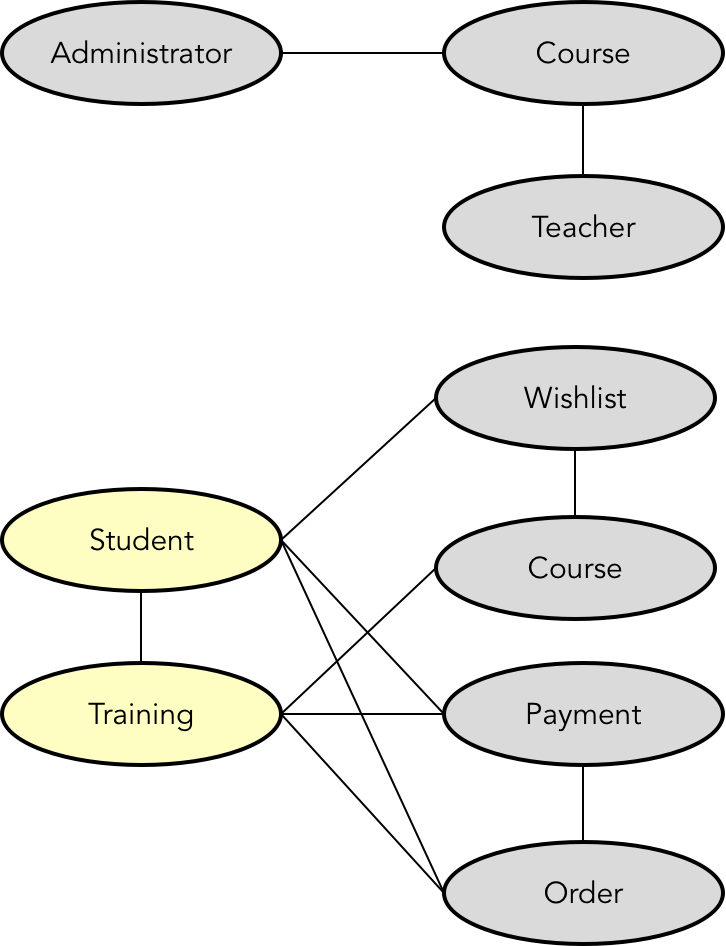

- 001 「战略篇」访谈 DDD 和微服务是什么关系？.md.html
- 002 「战略篇」开篇词：领域驱动设计，重焕青春的设计经典.md.html
- 003 领域驱动设计概览.md.html
- 004 深入分析软件的复杂度.md.html
- 005 控制软件复杂度的原则.md.html
- 006 领域驱动设计对软件复杂度的应对（上）.md.html
- 007 领域驱动设计对软件复杂度的应对（下）.md.html
- 008 软件开发团队的沟通与协作.md.html
- 009 运用领域场景分析提炼领域知识（上）.md.html
- 010 运用领域场景分析提炼领域知识（下）.md.html
- 011 建立统一语言.md.html
- 012 理解限界上下文.md.html
- 013 限界上下文的控制力（上）.md.html
- 014 限界上下文的控制力（下）.md.html
- 015 识别限界上下文（上）.md.html
- 016 识别限界上下文（下）.md.html
- 017 理解上下文映射.md.html
- 018 上下文映射的团队协作模式.md.html
- 019 上下文映射的通信集成模式.md.html
- 020 辨别限界上下文的协作关系（上）.md.html
- 021 辨别限界上下文的协作关系（下）.md.html
- 022 认识分层架构.md.html
- 023 分层架构的演化.md.html
- 024 领域驱动架构的演进.md.html
- 025 案例 层次的职责与协作关系（图文篇）.md.html
- 026 限界上下文与架构.md.html
- 027 限界上下文对架构的影响.md.html
- 028 领域驱动设计的代码模型.md.html
- 029 代码模型的架构决策.md.html
- 030 实践 先启阶段的需求分析.md.html
- 031 实践 先启阶段的领域场景分析（上）.md.html
- 032 实践 先启阶段的领域场景分析（下）.md.html
- 033 实践 识别限界上下文.md.html
- 034 实践 确定限界上下文的协作关系.md.html
- 035 实践 EAS 的整体架构.md.html
- 036 「战术篇」访谈：DDD 能帮开发团队提高设计水平吗？.md.html
- 037 「战术篇」开篇词：领域驱动设计的不确定性.md.html
- 038 什么是模型.md.html
- 039 数据分析模型.md.html
- 040 数据设计模型.md.html
- 041 数据模型与对象模型.md.html
- 042 数据实现模型.md.html
- 043 案例 培训管理系统.md.html
- 044 服务资源模型.md.html
- 045 服务行为模型.md.html
- 046 服务设计模型.md.html
- 047 领域模型驱动设计.md.html
- 048 领域实现模型.md.html
- 049 理解领域模型.md.html
- 050 领域模型与结构范式.md.html
- 051 领域模型与对象范式（上）.md.html
- 052 领域模型与对象范式（中）.md.html
- 053 领域模型与对象范式（下）.md.html
- 054 领域模型与函数范式.md.html
- 055 领域驱动分层架构与对象模型.md.html
- 056 统一语言与领域分析模型.md.html
- 057 精炼领域分析模型.md.html
- 058 彩色 UML 与彩色建模.md.html
- 059 四色建模法.md.html
- 060 案例 订单核心流程的四色建模.md.html
- 061 事件风暴与业务全景探索.md.html
- 062 事件风暴与领域分析建模.md.html
- 063 案例 订单核心流程的事件风暴.md.html
- 064 表达领域设计模型.md.html
- 065 实体.md.html
- 066 值对象.md.html
- 067 对象图与聚合.md.html
- 068 聚合设计原则.md.html
- 069 聚合之间的关系.md.html
- 070 聚合的设计过程.md.html
- 071 案例 培训领域模型的聚合设计.md.html
- 072 领域模型对象的生命周期-工厂.md.html
- 073 领域模型对象的生命周期-资源库.md.html
- 074 领域服务.md.html
- 075 案例 领域设计模型的价值.md.html
- 076 应用服务.md.html
- 077 场景的设计驱动力.md.html
- 078 案例 薪资管理系统的场景驱动设计.md.html
- 079 场景驱动设计与 DCI 模式.md.html
- 080 领域事件.md.html
- 081 发布者—订阅者模式.md.html
- 082 事件溯源模式.md.html
- 083 测试优先的领域实现建模.md.html
- 084 深入理解简单设计.md.html
- 085 案例 薪资管理系统的测试驱动开发（上）.md.html
- 086 案例 薪资管理系统的测试驱动开发（下）.md.html
- 087 对象关系映射（上）.md.html
- 088 对象关系映射（下）.md.html
- 089 领域模型与数据模型.md.html
- 090 领域驱动设计对持久化的影响.md.html
- 091 领域驱动设计体系.md.html
- 092 子领域与限界上下文.md.html
- 093 限界上下文的边界与协作.md.html
- 094 限界上下文之间的分布式通信.md.html
- 095 命令查询职责分离.md.html
- 096 分布式柔性事务.md.html
- 097 设计概念的统一语言.md.html
- 098 模型对象.md.html
- 099 领域驱动设计参考过程模型.md.html
- 100 领域驱动设计的精髓.md.html
- 101 实践 员工上下文的领域建模.md.html
- 102 实践 考勤上下文的领域建模.md.html
- 103 实践 项目上下文的领域建模.md.html
- 104 实践 培训上下文的业务需求.md.html
- 105 实践 培训上下文的领域分析建模.md.html
- 106 实践 培训上下文的领域设计建模.md.html
- 107 实践 培训上下文的领域实现建模.md.html
- 108 实践 EAS 系统的代码模型.md.html
- 109 后记：如何学习领域驱动设计.md.html
043 案例 培训管理系统
接下来，我会用数据模型驱动设计的方法设计一个培训管理系统。在这个系统平台上，管理员可以发布课程，注册会员可以浏览所有的课程信息，并选择将自己感兴趣的课程加入到期望列表中，还可以订阅课程，并完成在线支付。为了让我们将注意力集中在该系统的核心业务中，我省去了用户管理、权限管理等通用功能。
建立数据分析模型
首先，我们需要分析业务，从中识别出我们需要关注的实体和实体之间的关系。一种简单的做法是通过识别需求中的名词来获得实体，之后就可以辨别它们之间的关系。我们还可以通过引入不同的用户视图来创建不同的实体关系模型。
在数据模型驱动设计过程中，通常会利用需求功能规格说明书详细阐述需求，如：
- 管理员发布课程：管理员在发布课程时，需要提供课程名、类别、课程简介、目标收益、培训对象和课程大纲。每门课程还要给出课程费用、课程时长、课程排期和讲师的信息。讲师的信息包括讲师姓名、任职公司和职务以及老师的个人简历。
- 注册会员浏览课程信息：注册会员可以搜索和浏览课程基本信息，也可以查看课程的详细信息。
- 加入期望列表：注册会员在发现自己感兴趣的课程时，可以将其加入到期望列表中，除了不允许重复添加课程之外，没有任何限制。
- 订阅课程：注册会员可以订阅课程。订阅课程时，应该确定具体的课程排期。课程一旦被注册会员订阅，就应该从期望列表中移除。注册会员可以订阅多个课程。
- 购买课程：注册会员在订阅课程后，可以通过在线支付进行购买。购买课程时，需要生成课程订单。
通过以上需求描述，很明显可以获得两个用户视图，即管理员和注册会员。分别针对这两种不同的用户，识别需求描述中代表业务概念的名词，可以获得如下实体关系模型：

图中灰色实体恰好可以与需求功能描述中的名词相对应。黄色实体则针对业务做了进一步的提炼，按照培训领域的业务，将“注册会员”称为“学生（Student）”，将“一次课程订阅”称为“培训（Training）”。注意，课程（Course）与培训（Training）、订单（Order）之间的关系。课程是一个可以反复排期、反复订阅的描述课程基本信息和内容的实体。当学生在订阅课程时，需要确定具体的课程排期。一旦订阅，就成为了一次具有固定上课日期的培训。只有学生为这次培训支付了费用后，才会生成一个订单。
深化实体关系模型，需要确定数据表以及数据表之间的关系和属性，由此获得数据项模型，这需要继续深挖业务需求，由此获得数据实体的属性，并按照数据库范式对实体进行拆分，并合理安排数据表之间的关系。例如，针对课程实体，可以将其拆分为课程（Course）、日程（Calendar）与类别（Category）表。课程与日程、类别的关系是一对多的关系。针对订单实体，可以将其拆分为订单（Order）和订单项（OrderItem）。
数据项模型的主体是数据表以及数据表之间的关系。在培训系统中，我们欣喜地发现数据模型中的关系表不仅在于消除表之间的多对多关系，同时还体现了业务概念。例如，期望列表（WishList）体现了学生与课程之间的多对多关系，培训（Training）同样体现了这二者之间的多对多关系。
在梳理数据表之间的关系时，有时候会因为建立了更细粒度的数据表，而判断出之前的实体关系可能存在谬误。例如实体关系模型为支付（Payment）与培训、订单与培训之间建立了关系，但在数据项模型中，由于引入了订单项，它与培训存在一对一关系，从而解除了订单与培训之间的关系。在定义了支付的属性后，最终发现为支付与培训之间建立关系是没有意义的。最终，我们建立的数据项模型如下图所示：
建立数据设计模型
在数据设计模型中，需要定义持久化对象、数据访问对象与服务对象。为简便起见，本例不考虑各个数据表增删改查的数据管理操作，而只需要设计如下业务功能：
- 添加课程到期望列表
- 从期望列表中移除课程
- 预订课程
- 取消课程预订
- 购买课程
服务将完成这些业务功能。通常，我们需要根据业务功能所要操作的表来判断功能的承担者。例如“学生添加课程到期望列表”操作的是期望列表，这个功能就应该定义到 WishListService 服务中。要注意区分功能描述的概念名词与实际操作数据表的区别。例如，“学生预订课程”功能表面上是操作课程数据表，实际生成了一个培训和订单；“学生购买课程”表面上是操作课程数据表，但实际上是针对订单表和支付表进行操作，这两个功能就应该定义到 OrderService 服务中。
数据项模型中的每个数据表对应每个持久化对象，这些持久化对象本质上都是传输对象，仅提供业务操作的数据，不具备业务行为。访问数据库的行为都放在持久化对象对应的数据访问对象中，业务行为则由服务来封装。因此，针对以上业务功能得到的设计模型如下所示：
这里，我使用了 UML 类图来表达数据设计模型，这样可以清晰地看到服务、数据访问对象与持久化对象之间的关系。例如 OrderService 依赖于 PayService、PaymentMapper、OrderMapper、TrainingMapper 和 OrderItemMapper，这些 Mapper 对象又各自依赖于对应的持久化对象。以 Mapper 结尾的对象扮演数据访问对象的角色，之所以这样命名，是沿用了 MyBatis 框架推荐的命名规范。选择 ORM 框架属于设计决策，仍然属于数据建模设计活动的一部分，而这个决策不仅会对设计模型带来影响，同时还会直接影响实现模型。
在定义数据设计模型时，还需要理清持久化对象之间的关联关系。数据表之间的关联关系往往通过主外键建立，例如在数据项模型中，t_course 表的主键为 id，在 t_wish_list 与 t_calendar 等表中则以 courseId 外键体现关联关系。在对象模型中，通常会通过对象引用的组合方式体现关联关系，如设计模型中 Order 与 OrderItem 之间的组合关系，Category、Teacher 和 Calendar 之间的组合关系。
建立数据实现模型
数据实现模型首先包含了创建数据表的脚本。我使用了 FlywayDB 框架，在 db-migration 目录下创建了 SQL 文件 V1__create_tables.sql。例如创建 t_course、t_student 及 t_wish_list 数据表：
CREATE TABLE IF NOT EXISTS t_course(
id VARCHAR(36) PRIMARY KEY,
teacherId VARCHAR(36) NOT NULL REFERENCES t_teacher(id),
name VARCHAR(50) NOT NULL UNIQUE,
description VARCHAR(255) NOT NULL,
earning VARCHAR(255),
trainee VARCHAR(200),
outline TEXT,
price DECIMAL NOT NULL,
duration INT NOT NULL,
categoryId VARCHAR(36) NOT NULL REFERENCES t_category(id),
createdBy VARCHAR(36) NOT NULL REFERENCES t_administrator(id),
createdAt DATETIME NOT NULL,
updatedAt DATETIME NOT NULL
);
CREATE TABLE IF NOT EXISTS t_student(
id VARCHAR(36) PRIMARY KEY,
name VARCHAR(50) NOT NULL,
email VARCHAR(50) NOT NULL,
mobilePhone VARCHAR(20) NOT NULL,
registeredTime DATETIME NOT NULL,
createdAt DATETIME NOT NULL,
updatedAt DATETIME NOT NULL
);
CREATE TABLE IF NOT EXISTS t_wish_list(
studentId VARCHAR(36) NOT NULL REFERENCES t_student(id),
courseId VARCHAR(36) NOT NULL REFERENCES t_course(id),
PRIMARY KEY(studentId, courseId)
);
我选择了 VARCHAR(32) 类型作为表的主键，它对应于 Java 的 UUID。t_wish_list 实际上是 t_student 与 t_course 的关联表，但也体现了业务概念。以上 SQL 脚本并没有创建索引，可以考虑在后续版本创建各个表的索引。
每个数据表对应的持久化对象都是一个贫血对象，可以使用 Lombok 来简化代码，例如 Order 类的定义：
import lombok.Data;
import java.sql.Timestamp;
import java.util.List;
import java.util.UUID;
@Data
public class Order {
private String id;
private Student student;
private OrderStatus status;
private Timestamp placedTime;
private Timestamp createdAt;
private Timestamp updatedAt;
private List<OrderItem> orderItems;
public Order() {
this.id = UUID.randomUUID().toString();
}
public Order(String orderId) {
this.id = orderId;
}
}
import java.sql.Timestamp;
@Data
public class OrderItem {
private String id;
private String orderId;
private Training training;
private Timestamp createdAt;
private Timestamp updatedAt;
}
注意 Order 类与 Student 及 OrderItem 之间是通过对象引用来体现的，对比数据表，可以看到数据表模型与对象模型在处理关系上的区别：
CREATE TABLE IF NOT EXISTS t_order(
id VARCHAR(36) PRIMARY KEY,
studentId VARCHAR(36) NOT NULL REFERENCES t_student(id),
status ENUM('New', 'Paid', 'Confirmed', 'Completed') NOT NULL,
placedTime DATETIME NOT NULL,
createdAt DATETIME NOT NULL,
updatedAt DATETIME NOT NULL
);
CREATE TABLE IF NOT EXISTS t_order_item(
id VARCHAR(36) PRIMARY KEY,
orderId VARCHAR(36) NOT NULL REFERENCES t_order(id),
trainingId VARCHAR(36) NOT NULL REFERENCES t_training(id),
createdAt DATETIME NOT NULL,
updatedAt DATETIME NOT NULL
);
如果订单的数据访问对象 OrderMapper 要根据 id 查询订单，就需要映射器实现 ResultSet 中每一行到 Order 的转换，其中还包括对 Student 与 OrderItem 对象的映射，而 OrderItem 又与 Training 对象有关，Training 对象又牵涉到 Course 与 Calendar。要支持数据到对象的转换，就需要定义数据表与持久化对象的映射关系，同时，访问数据表的 SQL 语句则需要执行关联查询，以获取横跨多个数据表的数据信息。
数据实现模型与我们选择的 ORM 框架有关。本例使用了 MyBatis 框架实现数据的持久化。该框架支持 Java 标记或 XML 文件来定义表与对象的映射关系，并允许嵌入访问数据表的 SQL 语句。倘若 SQL 语句比较复杂，一般建议使用 XML 映射文件。例如，在 OrderMapper 中定义根据 id 获取订单对象的方法，就可以定义数据访问对象。MyBatis 框架一般以 Mapper 后缀来命名数据访问对象，并要求定义为一个抽象接口。例如访问订单的数据访问对象 OrderMapper 接口：
import org.apache.ibatis.annotations.Param;
import xyz.zhangyi.practicejava.framework.mybatis.model.Order;
public interface OrderMapper {
Order getOrder(@Param("orderId") String orderId);
}
获取订单的方法是一个接口方法，可以直接交给服务对象调用，例如在OrderService中：
@Component
@Transactional
@EnableTransactionManagement
public class OrderService {
private OrderMapper orderMapper;
@Autowired
public void setOrderMapper(OrderMapper orderMapper) {
this.orderMapper = orderMapper;
}
public Order getOrder(String orderId) {
Order order = orderMapper.getOrder(orderId);
if (order == null) {
throw new ApplicationException(String.format("Order by id %s is not found", orderId));
}
return order;
}
}
实现代码非常简单，但在其背后，MyBatis 需要建立一个非常繁琐的映射文件来规定映射关系，并将 getOrder() 方法绑定到 SQL 语句之上。这个映射文件为 OrderMapper.xml 文件：
<mapper namespace="OrderMapper">
<resultMap id="order" type="Order">
<constructor>
<idArg column="orderId" javaType="String" />
</constructor>
<result property="status" column="orderStatus" typeHandler="org.apache.ibatis.type.EnumTypeHandler"/>
<association property="student" javaType="Student">
<id property="id" column="studentId" />
<result property="name" column="studentName" />
<result property="email" column="email" />
</association>
<collection property="orderItems" ofType="OrderItem">
<id property="id" column="itemId" />
<association property="training" javaType="Training">
<id property="id" column="trainingId" />
<association property="student" javaType="Student" />
<association property="course" javaType="Course">
<id property="id" column="courseId" />
<result property="name" column="courseName" />
<result property="description" column="courseDescription" />
<association property="teacher" javaType="Teacher">
<id property="id" column="teacherId" />
<result property="name" column="teacherName" />
</association>
</association>
<association property="calendar" javaType="Calendar">
<id property="id" column="calendarId" />
<result property="place" column="place" />
<result property="startDate" column="startDate" />
<result property="endDate" column="endDate" />
</association>
</association>
</collection>
</resultMap>
<select id="getOrder" resultMap="order">
select
o.id as orderId,
o.status as orderStatus,
s.id as studentId,
s.name as studentName,
s.email as email,
oi.id as orderItemId,
t.id as trainingId,
c.id as courseId,
c.name as courseName,
c.description as courseDescription,
te.id as teacherId,
te.name as teacherName,
ca.id as calendarId,
ca.place as place,
ca.startDate as startDate,
ca.endDate as endDate
from t_order o
left outer join t_student s on o.studentId = s.id
left outer join t_order_item oi on oi.orderId = o.id
left outer join t_training t on oi.trainingId = t.id
left outer join t_course c on t.courseId = c.id
left outer join t_teacher te on c.teacherId = te.id
left outer join t_calendar ca on t.calendarId = ca.id
where o.id = #{orderId}
</select>
</mapper>
这个映射文件展现了如何通过定义 <resultMap> 来实现数据表到对象的映射。在 <resultMap> 中，通过 <association> 实现了对象之间的一对一组合关系，通过 <collection> 实现了一对多关系，通过为 <result> 指定 typeHandler 为 org.apache.ibatis.type.EnumTypeHandler 来处理枚举的映射。至于在 <select> 中，则是一个超级复杂的 SQL 语句，实现了多张表之间的关联查询。
只要数据访问对象实现了各种丰富的数据表访问功能，服务的实现就会变得相对容易。这实际上遵循了职责分离与协作的设计思想。服务可以用来编排业务，还可以干一些脏活累活，如处理异常或者事务。有的 MVC 框架如 Rails 使用活动记录模式来实现模型对象，却没有引入服务对象，混入在模型对象中的数据访问操作往往直接暴露给控制器，最后使得控制器变得臃肿不堪。实际上，服务才是真正封装业务逻辑的，哪怕它的实现采用了面向过程的事务脚本模式。如“购买课程”的业务功能实现：
public class OrderService {
@Autowired
private OrderMapper orderMapper;
@Autowired
private PaymentMapper paymentMapper;
@Autowired
private PayService payService;
public void purchase(int studentId, int orderId, Account account, String paymentStyle) {
try {
Order order = orderMapper.getOrder(orderId);
double totalAmount = 0.0d;
for (OrderItem orderItem : order.getOrderItems()) {
totalAmount += orderItem.getTraining().getPrice();
}
try {
PaymentResult result = payService.pay(account, totalAmount, paymentStyle);
if (result.isFailed()) {
throw new PaymentException("Failed to pay for order with id:" + order.getId());
}
paymentMapper.insert(studentId, orderId, totalAmount, paymentSytle);
orderMapper.updateStatus(orderId, OrderStatus.Paid);
} catch (RemoteException ex) {
throw new PaymentException(ex);
}
} catch (Exception ex) {
throw new ApplicationException(ex);
}
}
}